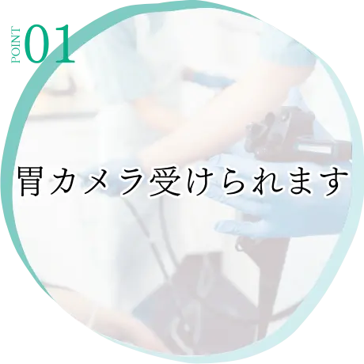
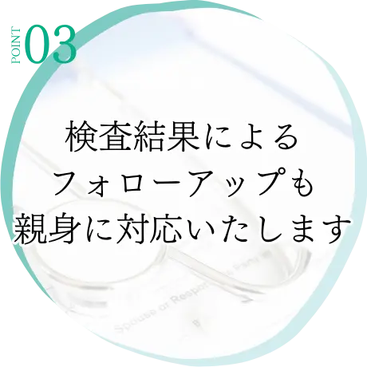
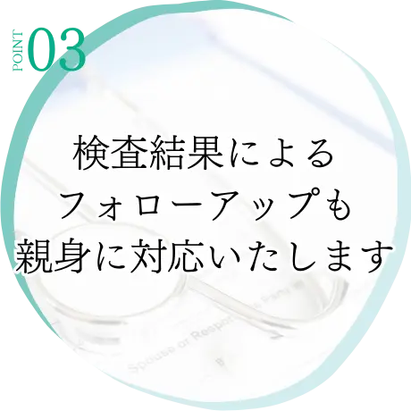
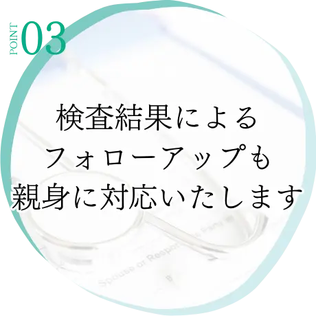
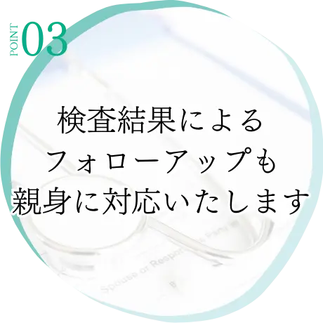

characteristics
当院の健診の特徴
 


福島県福島市鎌田の内科・健診・訪問診療
お電話でのお問い合わせ
024-552-5315
健康な生活を送るために、年一回定期的な市民検診をお勧めします。
検診を受けることによって、自分の体の変化をいち早く見つけ生活習慣病の早期発見や予防ができます。
受診の際はあらかじめご予約のうえ、市から発送される受診券を持参して窓口までお越しください
また、合わせてお薬手帳もご持参いただきますようお願いいたします。
当院の企業検診では、労働安全衛生法に基づき義務付けられた「定期健康診断」と全国健康保健協会管掌健康保険（協会けんぽ）に
加入している35歳以上の被保険者が受診できる「生活習慣病予防健診」を受けることができます。
（健康診断とは受ける方の年齢に応じた一般的な検査のことを言います。）
生活習慣病予防健診をお申し込みの際は、対象者一覧のFAXをお願いします。
日本人の生活習慣の変化等により、近年、糖尿病の生活習慣病の有病者・予備軍が増加しており、それを原因とする死亡は、全体の
約3分の1にものぼると推計されています。
生活習慣病予防のための新しい健診・保健指導を積極的に利用し、バランスのとれた食生活、適度な運動週間を身に付けましょう。
40～74歳の被保険者・被扶養者全員を対象に、生活習慣病、特にメタボリックシンドローム（内臓脂肪症候群）の予防を目的とした健康診断です。
特定健康審査の結果から、生活習慣病の発症リスクが高く、生活習慣の改善による生活習慣病の予防効果が多く期待できる方に対し
て、専門のスタッフが患者さん個人個人に合わせた生活習慣を見直すサポートをします。
特定保健指導には、リスクの程度に応じて、動機付け支援と積極的支援があります。
（よりリスクが高い方が積極的支援です）
初回面接
個別面接を20分以上行います。
専門的知識・技術を持ったもの（医師・保健師・管理栄養士等）が、対象者に合わせた実践的なアドバイス等を行います。
実践
ご自身で、「行動目標」に沿って、生活習慣改善を実践
実績評価
面接・電話・メール等で健康状態・生活習慣（改善状況）を確認（6ヵ月後）
初回面接
個別面接を20分以上行います。
専門的知識・技術を持ったもの（医師・保健師・管理栄養士等）が、対象者に合わせた実践的なアドバイス等を行います。
実践
ご自身で、「行動目標」に沿って、生活習慣改善を実践
生活習慣の改善応援
面接・電話・メール・FAX・手紙等を用いて、生活習慣の改善を応援します。（約3ヶ月以上）
実績評価
面接・電話・メール等で健康状態・生活習慣（改善状況）を確認（6ヵ月後）
人間ドックは健康診断ではわからない、病気の早期発見・早期治療と予防を目的としており、個人の意思によって受診するものとなります。一般的な健康診断よりも検査項目が多くなっています。
これまでは主に入院して数日かけて実施されてきましたが、当院では午前中のうちに終わらせることができます。
従来から行われてる胃透視（バリウム検査）は、胃の表面のシワをバリウム（造影剤）で映し出し影絵のようにして診ます。
対して胃カメラは、直径１cmほどのカメラで直接胃の表面を観察するため、より正確な診断ができると言われています。
当院では、胃透視から胃カメラへの変更を追加料金なく実施することができます。
なお、胃カメラは金曜日のみ実施可能です。
ABPI検査（血管年齢検査）は、血管の健康状態を評価し、動脈硬化の程度や血管障害を検出する検査です。
専用の検査機器で上腕と足首の血圧を測り、測定します。
日本人の病気による三大死因は、がん・心疾患・脳血管疾患です。このうち心疾患と脳血管疾患は、動脈硬化が危険因子の一つと言われているため、早期の発見が重要です。
お申し込み・ご相談は、電話もしくは下記の申し込みフォームからお気軽にお問い合わせください。
また、FAXでもご予約は可能です。その際は、「受診希望日」の記入をお願いいたします。